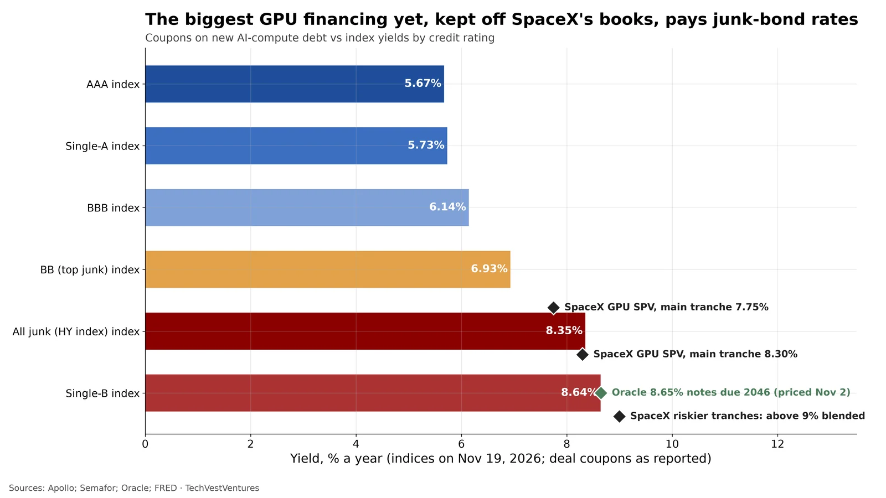
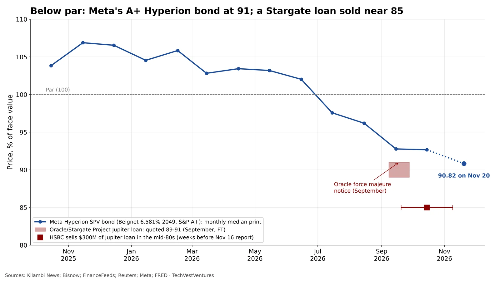

Q11. Junk Thesis

Thesis test: coupons at issue on 14 data-center-linked financings, May 2025 – November 2026, against the ICE BofA US High Yield index effective yield (black) and Moody's Baa yield (green dashed). Evidence FOR the thesis: Meta's Hyperion SPV bond (Beignet), rated A+ by S&P and kept off Meta's balance sheet, priced at 6.581% on Oct 16 2025, when the whole junk-bond index yielded 6.58% and Baa bonds 5.74%; by Oct 30 2026 it traded at 92.31 to yield 7.55%, closer to the high-yield index (7.99% on Oct 29) than to single-A bonds (5.63%). Six of the nine SPV/project bonds (red) were priced at or above the junk index on their issue dates, and all nine above the Baa yield, and the Fed's November Financial Stability Report says the subordinated tranches of such vehicles are held by high-yield funds, life insurers and BDCs. Evidence AGAINST: Microsoft and Meta still borrow on their own balance sheets well inside high yield, several 2026 SPV deals (Cipher 6.0–6.125%, Applied Digital 6.75–7.0%) priced below the junk index, and Beignet's lease is backed by Meta's residual-value guarantee.
- Fed FSR (Nov 13 2026): advanced-computing debt issuance topped $680 billion by October 2026 (vs $130 billion in 2023), about 31% of nonfinancial investment-grade issuance; public AI-computing debt outstanding exceeds $1.1 trillion; not-yet-commenced leases exceed $1 trillion undiscounted and guarantees plus take-or-pay commitments exceed $2 trillion.
- This week's signal: Blackstone's QTS cut a data-center private placement from $800M to $300M rather than pay up; the $100M 7-year piece priced at Treasuries +245 bp, still inside the high-yield index spread, so it is evidence both ways.
- On X, the Kobeissi Letter tallied $4.49 trillion of disclosed off-balance-sheet obligations at Alphabet, Meta, Anthropic, Microsoft, Amazon, Oracle and Nvidia, nearly 6x their on-balance-sheet debt and leases; unusual_whales flagged Nvidia's $36 billion of off-balance-sheet backstops for neoclouds.
- Verdict so far: the market is pricing much SPV debt as if it were junk-adjacent, regardless of ratings. That supports Michael's thesis on pricing; whether it is junk on credit quality depends on whether the hyperscaler lease guarantees hold.
- Deal-by-deal (issue date; coupon; HY index yield that day; Baa monthly): xAI secured notes (2025-06-15; 12.5%; HY 7.22%; Baa 6.15%); Meta Hyperion SPV (Beignet), A+ (2025-10-16; 6.581%; HY 6.58%; Baa 5.74%); Lake Mariner (Fluidstack, Google backstop) (2025-10-15; 7.75%; HY 6.57%; Baa 5.74%); Barber Lake (Cipher/Fluidstack) (2025-11-15; 7.125%; HY 6.81%; Baa 5.86%); Applied Digital Ellendale (CoreWeave) (2025-11-14; 9.25%; HY 6.81%; Baa 5.86%); Cipher Black Pearl (2026-02-15; 6.125%; HY 6.56%; Baa 5.81%); Applied Digital ComputeCo 2 (2026-03-15; 6.75%; HY 7.17%; Baa 6.04%); Stargate Michigan (Oracle/OpenAI) (2026-04-15; 7.5%; HY 6.74%; Baa 6.03%); Applied Digital ComputeCo 3 (2026-06-14; 7%; HY 6.91%; Baa 6.00%); Cipher Stingray (2026-06-16; 6%; HY 6.86%; Baa 6.00%); CoreWeave Helios notes (2026-07-15; 9.875%; HY 6.96%; Baa 6.19%); Microsoft (range 4.85–6.35%) (2026-10-29; 4.85–6.35%; HY 7.99%; Baa 6.59%); Oracle (range 7.00–8.65%) (2026-11-02; 7.00–8.65%; HY 8.12%; Baa 6.59%); Meta (range 5.85–7.50%) (2026-11-03; 5.85–7.50%; HY 8.14%; Baa 6.59%).
Note: Coupons at issue approximate yields at issue for bonds sold near par. Square markers have known months but approximate days (placed mid-month). Corporate deals show the full coupon range across maturities (2028–2066), so long bonds naturally yield more; the three corporate bars are nudged a few days apart for legibility. The ICE single-A, BBB and BB yields on Oct 29 2026 (5.63%, 6.01%, 6.69%) come from FRED as recorded in last week's TVV data-center spreadsheet; FRED was not reachable for a refresh on Nov 15.
Sources: Meta: Hyperion joint venture with Blue Owl (Beignet notes, 6.581%) Kilambi: Beignet bond prices (Oct 30 2026 close 92.31, YTM 7.55%) FRED: ICE BofA US High Yield Index Effective Yield (BAMLH0A0HYM2EY) FRED: Moody's Seasoned Baa Corporate Bond Yield (BAA) FRED: ICE BofA single-A effective yield (BAMLC0A3CAEY) Federal Reserve Financial Stability Report, Nov 13 2026, Box 2.2 'Leverage in the Data Center Buildout' AI Industry Reviews: AI data-center debt financing statistics 2026 (deal coupons) ComputeLaw: AI data-center securitization (Lake Mariner) The Next Web: Oracle $16B Stargate Michigan financing SEC 8-K: Microsoft notes, Oct 29 2026 Oracle: pricing of $20B common stock and senior notes, Nov 2 2026 SEC 8-K: Meta notes, Nov 3 2026 AInvest, Nov 13 2026: Blackstone's QTS walked away from $500M to protect its borrowing price X: Kobeissi Letter, $4.49T of off-balance-sheet AI obligations X: unusual_whales, Nvidia's $36B of off-balance-sheet neocloud backstops

Thesis test for the week. On Nov 20 Apollo and Goldman Sachs priced about $44 billion of senior and subordinated notes to buy Nvidia Vera Rubin GPUs that SpaceX will lease, the largest GPU financing to date. Semafor reported that the debt sits in a special-purpose vehicle so SpaceX can keep it off its balance sheet, that the bulk ($35.5 billion) was set to price at 8.3% and 7.75%, and that riskier pieces under $3 billion would yield above 9%. On Nov 19 the ICE BofA index of all US junk bonds yielded 8.35%, BB-rated junk 6.93% and BBB investment grade 6.14%: the main tranches price between the top tier of junk and the junk average, 1.6 to 2.2 percentage points above BBB. Evidence for the thesis: the market is charging junk rates for off-balance-sheet AI hardware debt, and Oracle's own 20-year notes from Nov 2 also priced above the junk index. Evidence against: the deal was oversubscribed and upsized, Apollo calls it a 'downside-protected, asset-based' structure, and part of the premium may pay for the risk that the GPUs lose value quickly rather than for default risk alone.
- ICE BofA effective yields on Nov 19, 2026: AAA 5.67%; Single-A 5.73%; BBB 6.14%; BB (top junk) 6.93%; All junk (HY index) 8.35%; Single-B 8.64%.
- Semafor (Nov 18): Apollo to lend close to $20 billion up front and syndicate the rest; seven-part deal; tranche coupons were reported before final pricing and Apollo's release does not state them.
- Apollo (Nov 20): anchors were funds managed by BlackRock, Goldman Sachs Asset Management and accounts advised by KKR; lease schedules begin when GPUs are delivered in the first half of 2027.
- Index yields are for intermediate-maturity bond baskets; the SpaceX notes and Oracle's 2046 notes have different maturities, so the comparison is approximate.
Sources: Apollo: Apollo and Goldman Sachs Announce Pricing of $44 Billion SpaceX GPU Financing (Nov 20, 2026) Semafor: SpaceX $40 billion chip financing to stay off balance sheet (Nov 18, 2026) Oracle: Pricing of $20 Billion of Common Stock and Senior Notes (Nov 2026) FRED: ICE BofA AAA effective yield (BAMLC0A1CAAAEY) FRED: ICE BofA Single-A effective yield (BAMLC0A3CAEY) FRED: ICE BofA BBB effective yield (BAMLC0A4CBBBEY) FRED: ICE BofA BB (top junk) effective yield (BAMLH0A1HYBBEY) FRED: ICE BofA All junk (HY index) effective yield (BAMLH0A0HYM2EY) FRED: ICE BofA Single-B effective yield (BAMLH0A2HYBEY)

Two prices that test whether data-center debt is safer than its ratings imply. Meta's Hyperion bond (issued by the Blue Owl joint venture Beignet, rated A+ and kept off Meta's balance sheet) traded at about 107 in late 2025 and last printed at 90.82 on Nov 20, 2026 on the FINRA tape. Bloomberg reported on Nov 16 that HSBC had sold its roughly $300 million slice of the $18 billion construction loan for Project Jupiter, the Stargate campus in New Mexico for Oracle and OpenAI, at prices in the mid-80s, weeks after Oracle sent the developer a force majeure notice that could let it defer rent if the project is delayed; Dutch bank ING is reportedly seeking buyers for $25 million of the same debt. Evidence for the thesis: an A+ bond and a bank loan to the biggest AI project in the US are both trading where distressed or junk credit usually trades. Evidence against: most of Beignet's fall tracks the rise in long-term Treasury yields since 2025 (the 20-year yield is now 5.43%), not credit fear, and a single sale of under 2% of the Jupiter package does not show where all its tranches would trade.
- Beignet monthly median prints (% of par): Oct 2025 103.83; Nov 2025 106.88; Mar 2026 102.82; Jun 2026 102.02; Sep 2026 92.77; Oct 2026 92.67; last print 90.82 on Nov 20, 2026 (80 reported trades Nov 16-20).
- FinanceFeeds: Oracle shares fell about 4% on Nov 17 after the Bloomberg report; HSBC's slice was under 2% of the $18 billion package arranged by about 20 banks in late 2025.
- Bisnow: yields on some data-center project bonds have climbed into double digits and credit default swaps on data-center debt hit an all-time high.
- The HSBC sale date is not public beyond 'several weeks' before Nov 16, so it is plotted as a range.
Sources: Kilambi News: Beignet bond prices from the FINRA tape (data as of Nov 21, 2026) Bisnow: HSBC Sells $300M Of Data Center Debt Tied To Stargate Project At Big Discount (Nov 17, 2026) FinanceFeeds: HSBC Sold Its $300 Million Slice of an $18 Billion Data Center Loan in the Mid-80s (Nov 17, 2026) Reuters: Oracle's $18 billion data center debt under pressure, FT reports (Sep 18, 2026) Meta: Joint venture with Blue Owl Capital for Hyperion FRED: 20-year Treasury yield (DGS20)